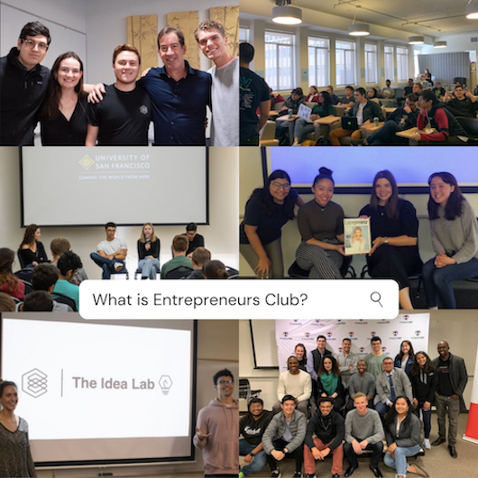
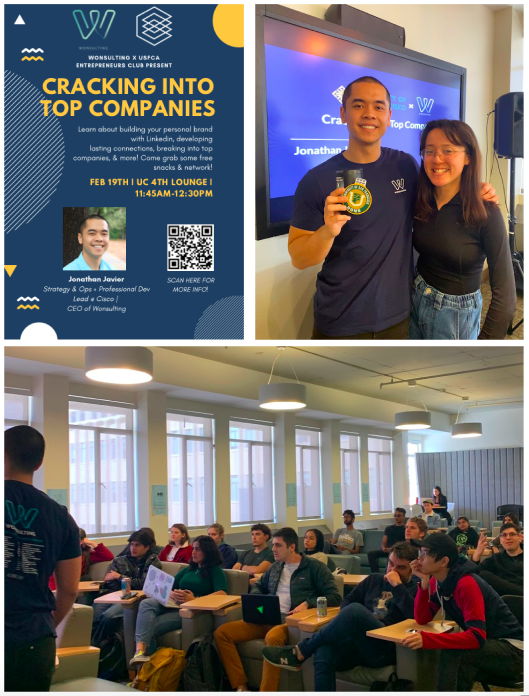
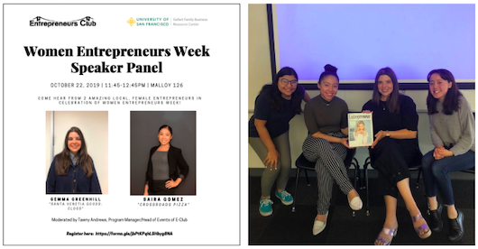
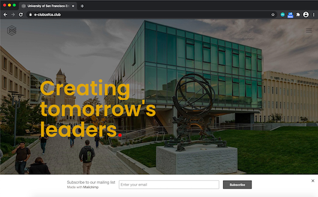
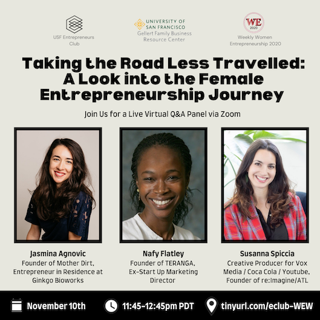
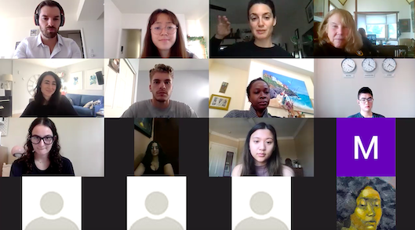

USFCA Entrepreneurs Club
Entrepreneurs Club is a student led organization at the University of San Francisco with over 300 members/club alumni.
What is Entrepreneurs Club?
Entrepreneurs Club, also known as "E-Club", is University of San Francisco's exclusive student-led organization focused on all things tech, business, and entrepreneurship. The club seeks to bring together students across all years and majors to work on personal / professional development, skills building, networking, collaboration opportunities, and more, all while offering opportunities to directly immerse themselves in the entrepreneurial landscape of the Silicon Valley.

My Role
I currently serve as the Co-President of the Entrepreneurs Club, with my past roles being a Program Manager / Head of Events (2019-2020), and an Events Coordinator Intern (2018-2019). Some highlights/projects of mine are listed below.
- Entrepreneurs Club Website Creation / Club Rebranding (2018-2019)
- Women Entrepreneurship Week 2019 SF Speaker Panel (October 2019)
- "Cracking into Top Companies" feat. Jonathan Javier, A Wonsulting x EClub Event (February 2020)
- "Taking the Road Less Traveled: A Look into the Female Entrepreneurship Journey", A Weekly Women Entrepreneurs 2020 x EClub Event (November 2020)
- MailChimp + Social Media Marketing Communications (2018-Present)
"Cracking into Top Companies" feat. Jonathan Javier, A Wonsulting x EClub Event (February 2020)
Leading the coordination for this event, I organized logistics for the speaker, handled venue booking, amenities, etc. and led all social media marketing communications. The promotional flyer was designed by me via Canva. There were 45+ people in attendance, making for a 62% increase from the workshop event held a month prior thanks to effective marketing.

Women Entrepreneurship Week (WEW) 2019 SF Speaker Panel (October 2019)
I served as the main point of communication and coordination for this event. This speaker panel marked the first annual collaboration event between EClub, Women Entrepreneurship Week, and the USFCA Gellert Family Business Center. I moderated the panel, and there were 50+ in attendance.

Entrepreneurs Club Rebranding / Website Creation (2018-2019)
In the Fall 2018, the executive board of EClub began a rebranding project of the club creating a new logo and developing the club's first official website. I assisted the team with brand visioning and helping to build the website using HTML + CSS. You can visit the website and/or the GitHub repository below.

"Taking the Road Less Travelled: A Look into the Female Entrepreneurship Journey", A WEW 2020 x EClub Event (November 2020)
As part of EClub's now annual event partnership with Woman Entrepreneurs Week (rebranded at Weekly Women Entrepreneurs due to the onset of the COVID-19 pandemic) and the USFCA Gellert Family Business Center, I led coordination for this speaker panel event. My main roles included communicating with USFCA faculty and our panel of 3 speakers, marketing the event to the EClub/USFCA student community, and handling logistics for our first virtual speaker panel hosted + recorded via Zoom. A recording of the virtual event can be found below.


View Event Recording